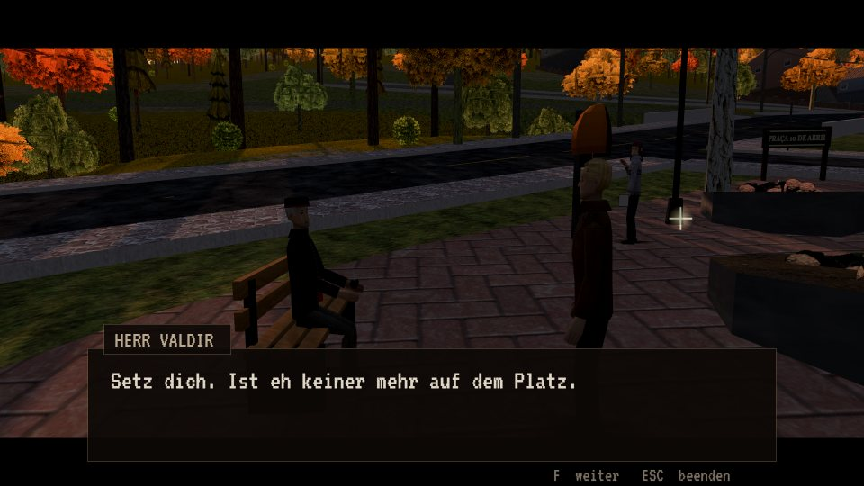

PS1 RETRO · 320×240
PS1 RETRO · 320×240
Wie auf der PlayStation 1
Kantige Polygone, Texturen in Pixel-Art und Figuren, gebaut wie in den ersten 3D-Spielen. Spiel in KLARES 3D oder in PS1 RETRO, mit echtem Dithering und echter 15-Bit-Farbe.

Vale do Herval · Rio Grande do Sul · Mai
Etwas geht im Wald um.
Ein Survival-Horror in der dritten Person im Look der PlayStation 1, in einem Städtchen deutscher Kolonisten im Bergland Südbrasiliens. Der Nebel hebt sich nicht, das Vieh liegt blutleer auf der Koppel, und nach Einbruch der Dunkelheit geht keiner mehr vor die Tür. Außer dir.
Kostenlos · im Browser · ohne Installation
Aushang am Platz
In den letzten Nächten wurden in Teewald Hühner, Enten und sogar Schafe tot aufgefunden. Alle mit zwei Löchern im Hals und ohne einen Tropfen Blut.
Das Rathaus sagt, es sei ein Pampasfuchs. Das Veterinäramt spricht von Hunden. Die Reporterin aus Porto Alegre hat schon elf Fälle in zehn Tagen gezählt, und niemand will mit ihr reden.
Du bist nicht von hier. Du bist an einem nebligen Nachmittag über die Promenade am Rio Cadeia gekommen und hast beschlossen zu bleiben, um herauszufinden, was im Wald umgeht. Die Stadt mag keine Fragen, aber jeder hier kennt ein Stück der Geschichte.
Als ich die Taschenlampe anmachte, leuchteten die Augen rot. Dann verschwand es in Sprüngen im Wald.
Was dich erwartet
Kamera über der Schulter, knappe Munition und eine ganze Stadt, die du im Dunkeln durchqueren musst. So, wie Horrorspiele in den 90ern waren, nur im Browser.
PS1 RETRO · 320×240
Kantige Polygone, Texturen in Pixel-Art und Figuren, gebaut wie in den ersten 3D-Spielen. Spiel in KLARES 3D oder in PS1 RETRO, mit echtem Dithering und echter 15-Bit-Farbe.
 Echte Karte
Echte Karte
Straßen, Fluss, Platz und Hügel aus echten Karten, mit rund 600 Gebäuden in ihren echten Umrissen.
Ein Inventar, das das Spiel anhält, Nahkampfwaffen, die sich abnutzen und zerbrechen, Steine zum Werfen und Kuchen mit Marcela-Tee, um das Leben zu flicken.
Zwölf Kapitel, jedes mit einer Geschichte, die die Alten nur leise erzählen, nah am Herd. Welche welche ist, findest du drinnen heraus.

Die Taschenlampe reicht nur ein paar Meter, und die Geräusche kommen von überall.
Auf PC, Handy oder Tablet, mit Tastatur und Maus, Controller oder Touch. Der Fortschritt wird von selbst im Browser gespeichert.

Herval kommt von Erva-Mate, dem Mate-Tee. Und auf Hunsrik heißt das Teewald. Schön, nicht wahr? Aber die Alten hatten einen anderen Respekt vor diesem Wald. Nach Sonnenuntergang ging niemand hinein.
Galerie
Mehr von Teewald

Die Kolonisten aus dem Hunsrück, der Wald vom Tee und die letzten Wochen in der Folha de Teewald.
Lesen ▶
Von der Promenade bis zum Friedhof: die Orte, an denen nach sechs keiner mehr bleibt.
Erkunden ▶
Vierundzwanzig Einwohner voller Angst, und jeder kennt ein Stück der Geschichte.
Kennenlernen ▶Der Bus nach Novo Hamburgo ist seit Mittag nicht gekommen. Wenn du schon bleibst, behalt den Wald im Auge.
▶ Jetzt spielen Kostenlos · PC, Handy und Controller